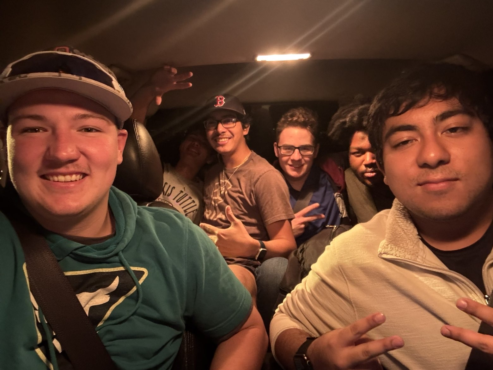
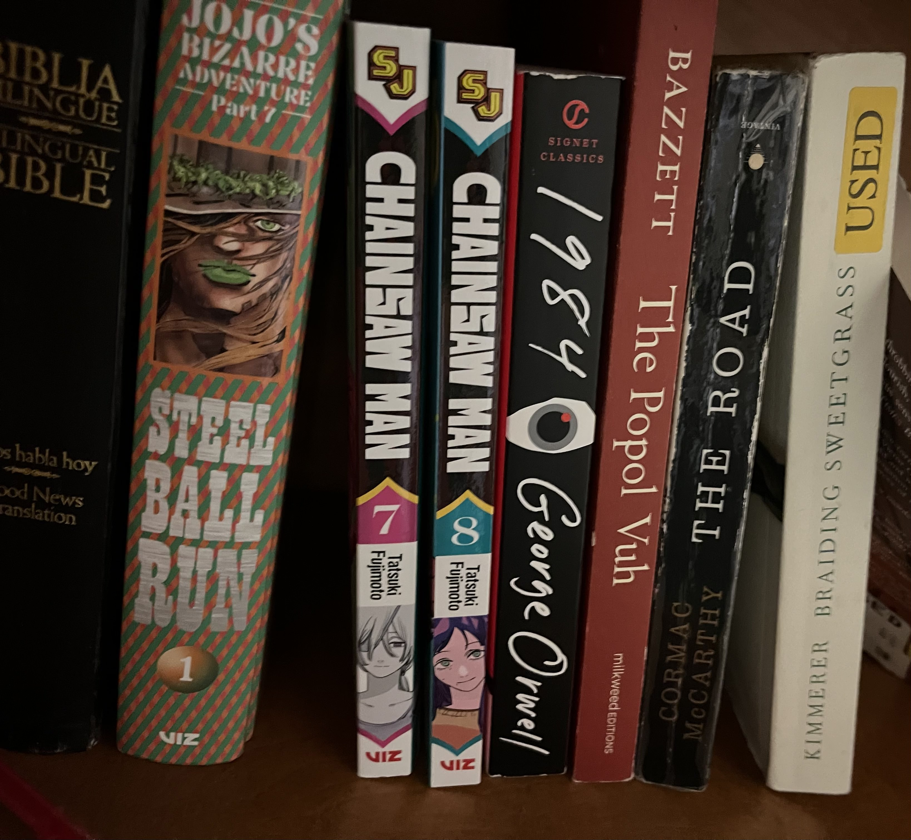
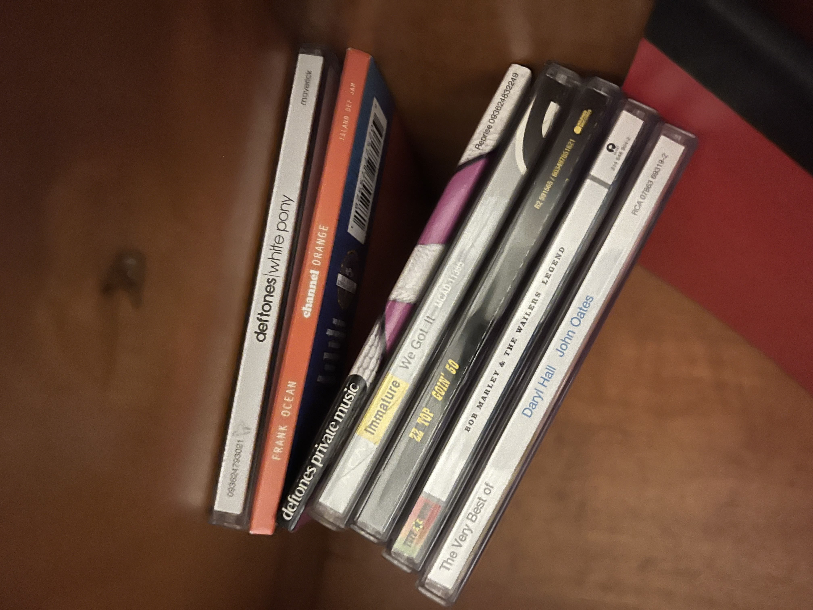

My name is Alejandro Lopez and as of Spring 2026 I am a Freshman at Oklahoma State University who is majoring in Computer Engineering. I was born and raised in Oklahoma (unfortunately), and I want to be able to make a new life for myself. I hope that through my college education, the friends I make, and the personal journey I'm on that I can make it all happen.
I was born on June 1st, 2006 in Woodward, Oklahoma and was raised in a small town called Shattuck. I'll be honest, that's about all I'll write about my time in Shattuck on here. All I'll say is that wasn't pretty.

What you do need to know is that what you're seeing is 19 years of fighting and enduring so much for a chance at being here and making a life that I want to live. I've been able to do just that. I've been able to make so many new friends, memories, and learn so much, and I want to go even farther.
It doesn't matter if I'm not the best person to do it or if people think I can't do it. The only thing that matters is that I want to.
You have the freedom to choose who you are and what you want to do. Anyone who tries to tell you or prove otherwise is someone who's not worth listening to.
*I was Valedictorian for my high school class. Also voted most likely to succeed
*I love collecting music CDs, books/manga, plushes, hats, pins, stickers, clothing, and keychains, especially whenever I go somewhere new. I don't own a CD player. Yet.


*My favorite music artists are Deftones, Lucy Bedroque, Childish Gambino, Underworld, Nujabes, Snow Strippers, Gorrilaz, Clams Casino, The Garden, and The Smashing Pumpkins.
*My hobbies are computer building and computer architecture, cooking, writing, learning about theology, horticulture, coding, driving, and skateboarding. I've been told I'm a very good cook and I'm artistically expressive.
*My favorite foods are...
> curry
> espaguetti verde with milanesa
> any bird
> jelly-filled donuts
> pozole
> anything that includes any kind of
rice, vegetables (especially onions, garlic, peppers, tomatoes, napa cabbage), honey, citrus, and/or seafood
> tres leches
> peanut butter
> peaches, apples, oranges
> tacos de al pastor, birria/quesabirria, tripa, gumbo, crab, takoyaki, hash brown casserole, seven-layer/caprese salad, po' boys, tortas, spam musubi, dumplings,
> sunny-side up eggs, cornbread, alligator, biscuits and gravy, ice cream (mint chocolate chip is my favorite), deep dish pizza, carbonara pasta,
> ...beer-battered fish, hush puppies, spinach, brussel sprouts, asparagus, crawfish, oysters, medium rare steak, and tunas (prickly pears).
I like a lot of food as you can tell, but I don't like devilled eggs, natto, extremely greasy food, and wasabi
The weirdest foods I've eaten are cow toungue and brain, chapulines, frog legs, and calf fries. They all taste great.
Dragonfruit is the most underwhelming thing I've eaten.
*I had to help castrate a hog for my Agriculture class a couple of times in high school. I also learned how to weld there. I fucking hated welding in that class.
*I won first place in the 2025 Poketoberfest Root Beer Chugging Contest. i got a medal out of it
*If I was born 5 days later I'd be born on 6/6/6. Scary!
I don't really believe in cosmology, but I found out through Tarot readings I'm part of the Lovers and Devil arcana. Even more scary!
*I've been to Mexico three times, specifically San Luis Potosi. Once when I was 3, another when I was 9, and another time when I was 17. The bus rides to and from take 2 days straight and makes your butt HURT. SLP is my favorite place ever.
*I like to travel a lot, but I've only been to so many places, such as San Juan de Los Lagos in Jalisco, Mexico and the DFW, Llano, and San Antonio in Texas. I hope to change that and maybe study abroad in either Japan or Taiwan.
*Among those places I'd like to visit, I'd also like to visit LA, NYC, Europe, South America, CDMX, Oregon, China, and Italy.
*Some things i want to do before I die are..
> learn how to suplex someone
> break a bone (lol)
> see a music artist I like play live
> save someone's life
> try lobster, sea urchin, pufferfish
> go on a date
> sneak in a whole pizza into a movie theater
> go to the beach to see the ocean
> surf, ski/snowboard
> make a personal creative project.
> go to the top floor of a tower
> go on a plane
*If I were an animal, I feel like I'd be a crab or some kind of bird.
*When I was little, I used to have a recurring dream where I'd be in my parents' pickup going down a super foggy highway near my house, and there would be no driver.
*I used to have an irrational fear of insects. I'm still not partial to them.
The movies I REFUSE to see are Human Centipede, Tusk, Gummo, and Salo, because they freak me out so much.
*In elementary school, I got in trouble because I spoke more Spanish than English, which made it frustrating for one of the teachers to understand me, and I got sent to the principal's office for it. I wanna put this down to spite that teacher <3